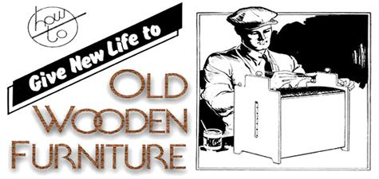

Heading for an auction or thrift shop? While you're there, take a second look at those old tables, chests, and whatever shoved back in odd corners . . . and don't be overly turned off by ugly paint or varnish. What's under the surface may be a quality piece of furniture that will make a fine addition to your own home or which can be a welcome source of extra cash.
Often, the difference between junk store dust catcher and collector's item is just one simple step: refinishing. I've put some time into learning this skill and find it very useful and profitable. My house is full of old furniture which I bought for next to nothing and made beautiful at low cost . . . and down in the basement right now is a piece which set me back $90.00 and should sell easily for over $300 when I've finished with it. The work isn't exactly fun, I'll admit, but now that I've perfected my methods I do find this home business to be truly absorbing and rewarding.
My first and most important piece of advice to anyone who wants to copy my success is, "Forget all the refinishing guides you may have read." Most such directions make impossible demands on your time and money. A perfect high-gloss finish, for instance, is difficult to apply and a waste of effort. The same goes for the majority of "grain fillers" and sealers. Ditto for oil finishes, which are fragile. Forget all that and let me tell you about my favorite method of putting a new face on used furniture . . . a quicker, less expensive technique that lets beautiful old wood look like beautiful old wood.
What you want to look for in secondhand furniture is good wood hiding under layers of badly applied paint or varnish. The more thoroughly its quality is concealed, the more valuable the piece will be when you're done. Many smaller items, and almost anything that is lightly finished, will be bid out of sight . . . so your best bets are the big gummed-up uglies.
Material, construction, and general appearance of old furniture are more important than detail or present state. I've even bought pieces that were failing apart, as long as the wood wasn't cracked and the joints themselves-as distinct from their shaky fastenings-were in decent shape.
Look at undersides, chipped places, etc., to find out what the wood's like, and don't be fooled by veneers (they peel and split and bleed, and pieces so covered aren't worth much at best unless they're unusual for some reason). The following are my favorite materials, listed in order of preference: oak, walnut (even though it may streak in finishing), pine, maple, and birch. Mahogany bleeds badly and is very soft. Other woods may be OK for all I know, but you're not likely to run into them.
First, you'll need a place to work that is decently lighted and ventilated . . . away from fire, kids, and livestock. An old shed is fine as long as you don't care about the floor. (Paint stripper not only eats straight through any finish but also devours newspapers, cardboard, and plastic.)
You'll be using a lot of semi-paste stripper and a little of the liquid type. Avoid "wash-off" products . . . they're messy and can ruin furniture. Also steer clear of homemade brews, which work but are often more dangerous than commercial caustics and may be harmful to wood. Keep in mind that any paint remover is mean stuff. . . and treat it accordingly.
The varnishes you buy should be high-gloss polyurethane or epoxy only, since they're the most durable and easiest to use. You'll certainly regret any flirtations with cheap dime-store finish or "varnish stain". I'd avoid "antiquing", too. It's a bad trip when put on nice-looking wood, and if a surface is damaged I'd rather cover it with oil paint applied over heavy primer.
What about stain? Most old wood doesn't need it . . . but if you do buy such a product, be sure it's compatible with the varnish you use. Ask the man at the paint store (and be sure it is a paint-not a dime or hardware-store, if you have a choice of dealers).
The following is a list of necessary tools, roughly in order of use:
[1] Goggles. Always, I mean ALWAYS, wear them . . . and long-sleeved work clothes.
[2] Cloth gloves. I haven't found any rubber or plastic that really stops paint stripper. Leather is also useless.
[3] Hand cream, to be applied before you put your gloves on and after you wash up. If you skip this precaution, your skin will keep you awake at night.
[4] One large, flat, and dull metal scraper (like a pancake turner or spatula), and many smaller homemade wooden ones.
[5] A goo bucket to catch all the mess, even if you don't care about the floor of your work area.
[6] A small wooden brush with fine stiff bristles (for use with wet stripper).
[7] A toothbrush (to clean dry surfaces only).
[8] No. 2 and No. 0000 steel wool.
[9] Rags and string, for cleaning up and improvising clamps as needed on glued joints. Also a lintless cloth, if you can find one, for the application of varnish.
[10] Glue. White glue is easy to use, but almost any kind will work. Forget hide glue, though, and be wary of high-solvent adhesives which can stain or mar a finish.
[11] Screws, etc., as needed.
[12] Other tools? There's just one rule: Don't buy anything expensive unless you're sure you want to go in that deep.
Finally, the most important tool of all . . . the one you'll need the most of: patience. All the way through every job, work gently (lovingly, if you can).
Disassemble the table or whatever as much as you can by gentle means. If its joints and screws are solid, that's fine . . . don't maul them trying to get them apart. Any fastenings that are at all loose should be undone. Old glue, etc., can then be cleaned out, and the parts left separated until the refinishing is complete.
First of all, wash an inconspicuous part of a piece with soapy water to see what comes off. Sometimes "black paint" turns out to be only water stain, and you're home free. (Never wet bare wood, though, or you'll raise the grain.)
No luck with the water treatment? Then flow on semi-paste stripper, heavily but gently, with a rag swab. Wait an hour . . . and when the chemical has raised the paint, push off the coating (large areas first and details later). Please note: I said "push", not "scrape". The object is to remove the paint without hurting the wood. Use as little pressure as possible, rather than trying to force off the softened gunk. The stripper is the real tool, the scrapers only extensions of your hands.
Stripper left on too long becomes gummy, and most of it should be removed between stints of paint scraping. When almost all the old finish is safely in the goo bucket, ease off the remainder with No. 2 steel wool and rub the piece dry with a rag.
Details can be cleaned with liquid stripper . . . but remember that such a preparation "cuts" differently from-and will not leave wood looking exactly the same as-a semi-paste. To avoid streaks, keep the liquid stripper off large, flat surfaces: let it run only into other detailed areas.
Remove softened paint with wooden scrapers, string, and a wooden-handled brush, let the surface dry, and brush any remaining gunk out of the crevices with the toothbrush. (Don't use the tool with liquid stripper, though, or the plastic will melt.)
Allow the article you're working on to dry for a day or more. Then rub it-with the grain only!-with No. 2 steel wool. (This isn't sanding! You only need to cut the glaze left by the stripper.) Finally, dust the piece well with a rag, giving special attention to details.
If the piece you're restoring isn't streaky at this point, good. If it is, either lighten the dark areas with liquid stripper on a rag or treat the light spots with a few drops of stain applied in the same way. Evenness, not perfection, is the goal.
I've said it before and I'll say it again: Old wood is beautiful in itself and I don't think most furniture should be stained. If you feel otherwise, use restraint so that the final effect wilI be natural. Apply coloring lightly, wait a few minutes, and rub it down with a rag. Don't ever try to get a deep stain in one coat, or the result will look like bad paint. Let the finished job dry a day before you varnish it.
Pros go over furniture with a vacuum cleaner and "tack rag" immediately before varnishing . . . but you can get the same effect by rubbing and dusting a surface carefully with a cloth. Then swab on the finish with a lintless rag. Make haste slowly, work the coating in well (it's going to be its own sealer) and be sure that no excess is left on corners and edges. Let the piece dry thoroughly, dust it again, and apply another layer (less varnish will be needed this time). Repeat the whole process as often as you want . . . but keep those coats light!
When you've applied enough thicknesses of varnish to suit you (remember, you want the surface to resemble wood, not glass), rub the dried top layer lightly with No. 0000 steel wool to cut the gloss. The result will be a beautiful low-sheen protective coating, very hard and waterproof, which looks and feels like an expensive oil finish.
Reassemble the piece if necessary, with only enough glue to do the job (excess white glue can be wiped off with a damp rag). Then, if you want a high sheen like that of some old furniture in museums, apply a light coat of paste wax and rub it down.
Don't be in a hurry to sell an article, or you may get less than it's worth. Unless the item is small, advertise it by itself or only with similar pieces. Show it in your living room or other attractive setting . . . not in the workshop, unless a clean display area is available. And if the piece is really prime, consider having it appraised and then selling it by sealed bids.
Actually it's hard to lose money on good wood, nicely finished, any way you handle the transaction. The demand for any quality wooden item is currently good and constantly getting better. You should be able to do quite well for yourself by rescuing junk store Cinderellas and revealing their true beauty.
|
 |
|
|